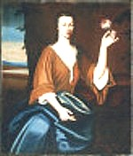

Catharina Van Rensselaer Ten Broeck
Catharina Van Rensselaer was born in December 1691. She was the daughter of Hendrick and Catharina Van Brugh Van Rensselaer.
In June 1714, she married childless widower Johannes Ten Broeck at the Albany Dutch church. By 1733, their marriage had produced thirteen children who were christened in Albany where she was a member and frequent baptism sponsor.
The marriage of the children of Albany's most affluent families brought the couple great resources and opportunities. They made their home in the first ward but were able to enjoy the country estates of both of their families. After 1740, these Ten Broecks withdrew from public life and are said to have re-located to New Brunswick, New Jersey.
Catharina Van Rensselaer Ten Broeck died in January 1770.
Portrait: Very poor quality reproduction of a portrait by Nehemiah Partridge done about 1720. In the AMICO Library. Original in the collection of the Philadelphia Museum of Art.